La vie au bout de chez soi
Documentaire
À l'automne 2021, Pierre Guyaux a décidé d'aller poser son van à Freyr pour la saison. Un voyage de trois mois à seulement une heure de route de chez lui... Pour prendre le temps d'exister, de pratiquer sa passion et de redécouvrir ce lieu magique, berceau de l'escalade sportive en Belgique et au-delà.
Réalisation : Jonas et Pierre Guyaux / BO : Maxime Baldewyns
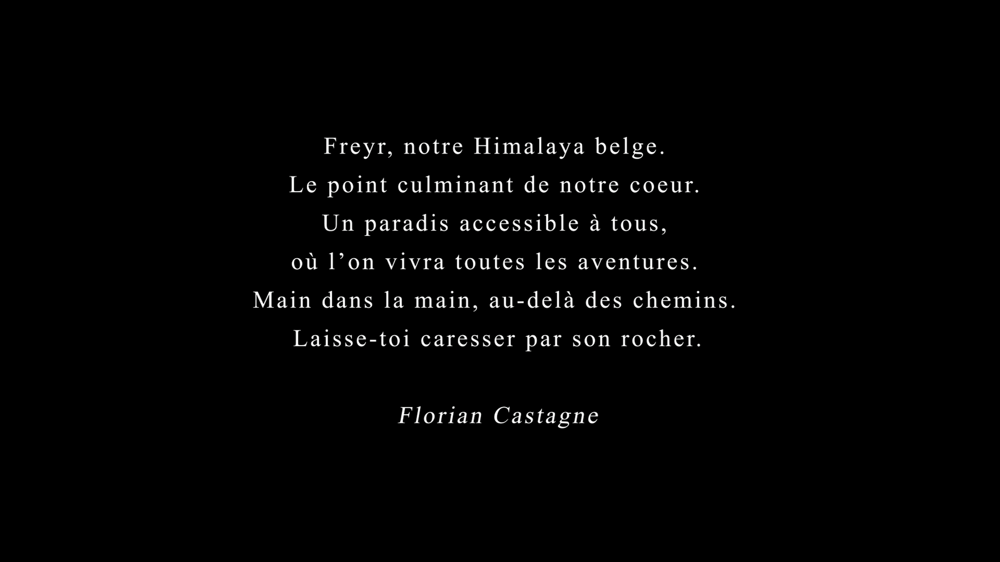

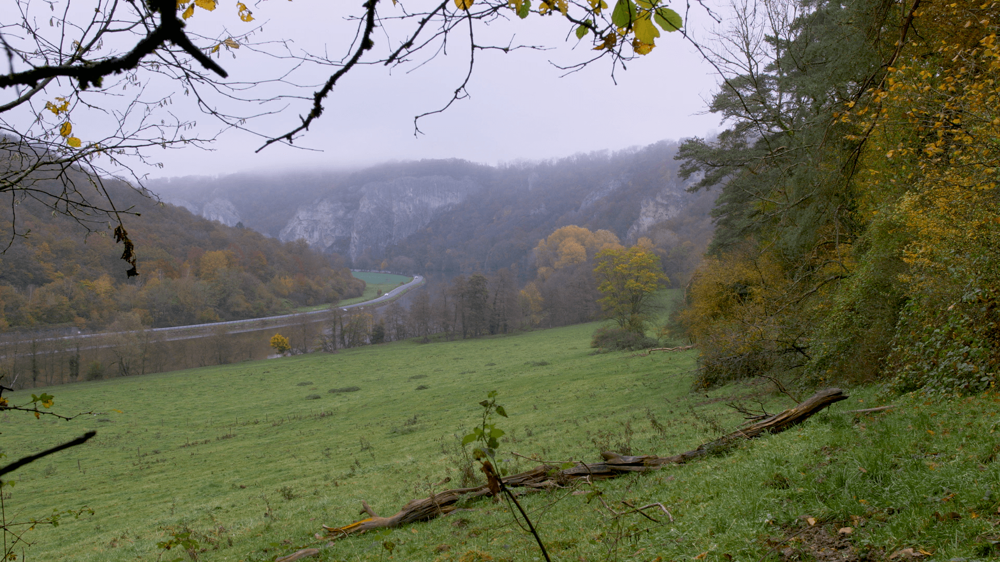
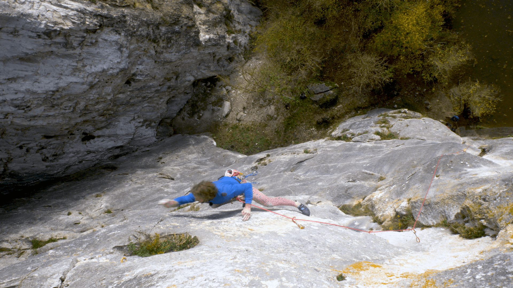
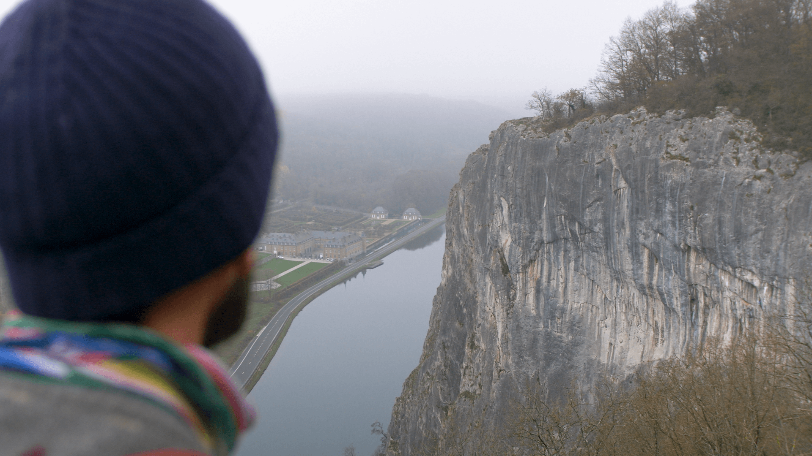
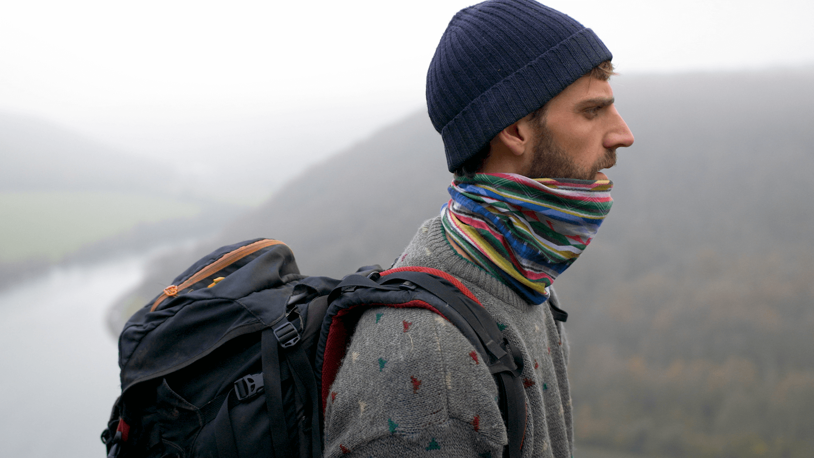
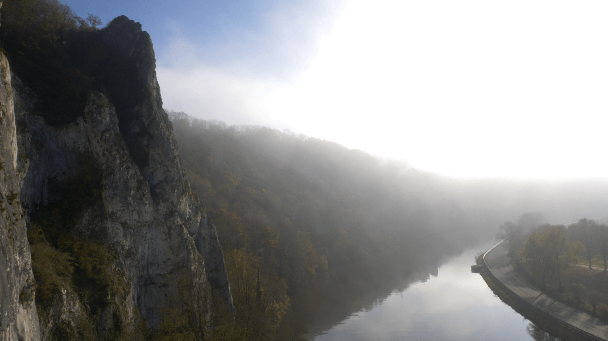
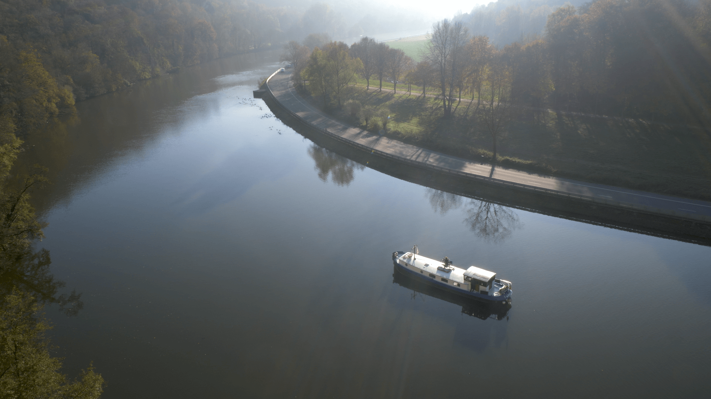
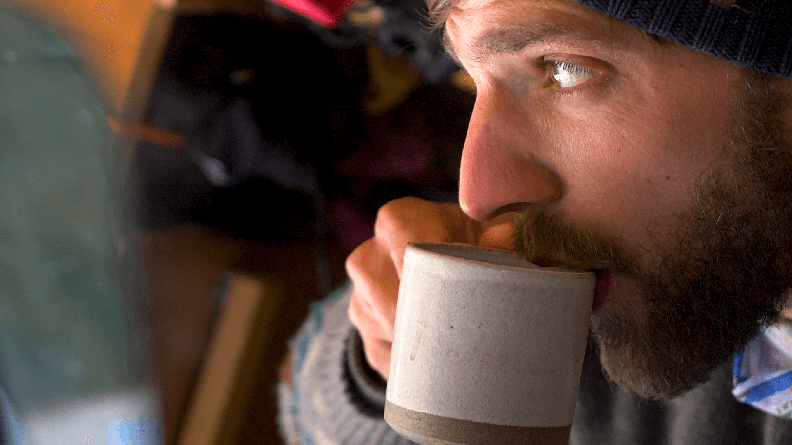
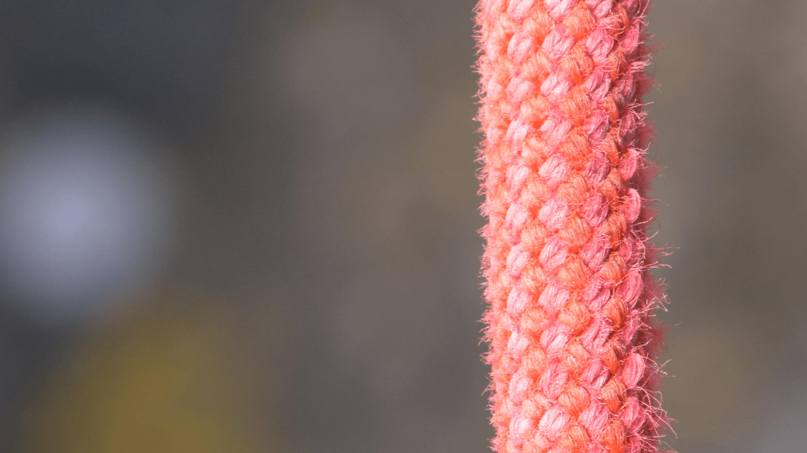
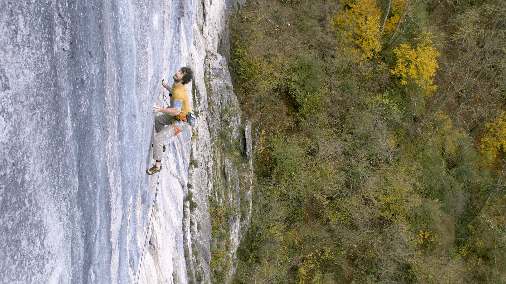
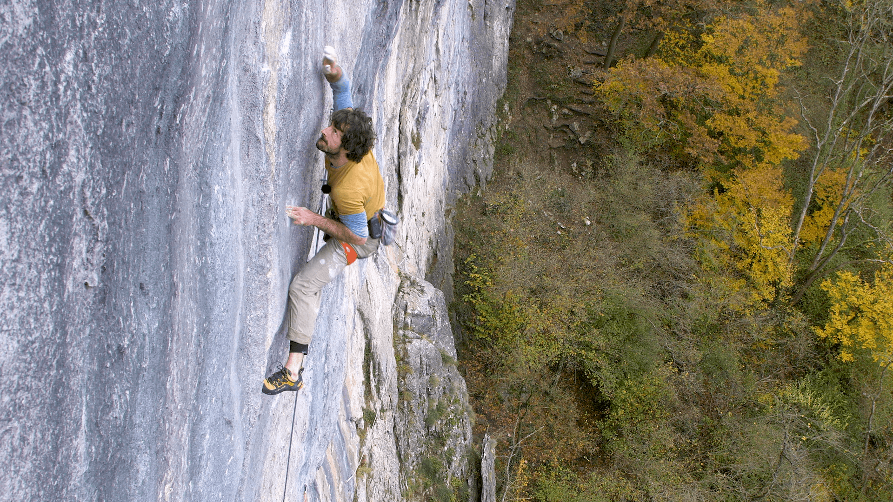
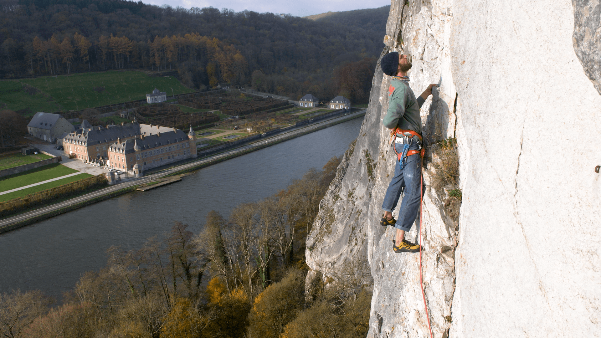
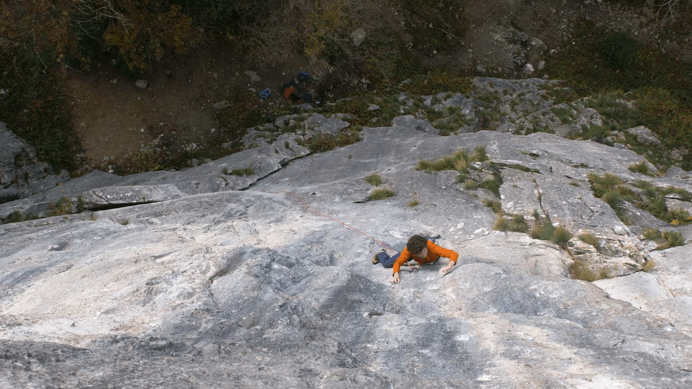
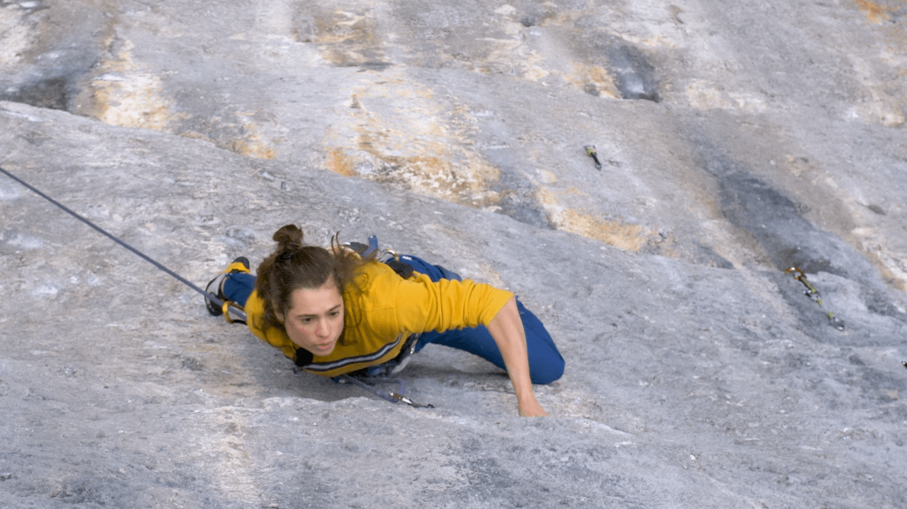
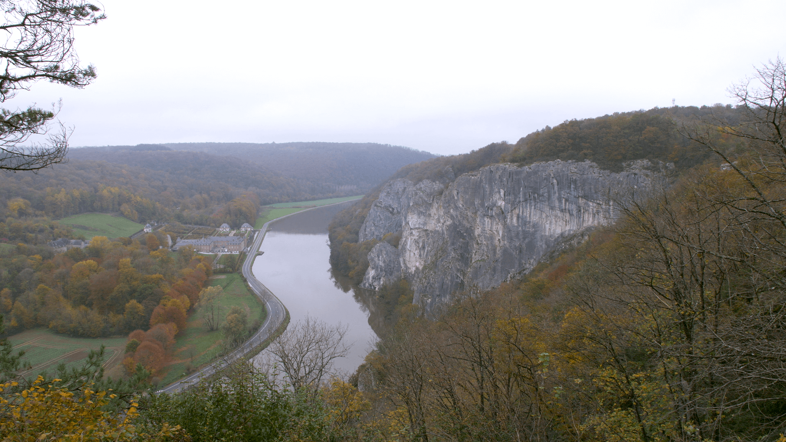
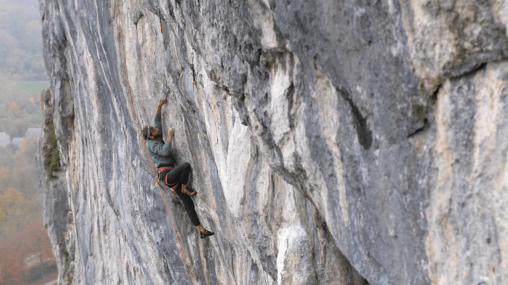
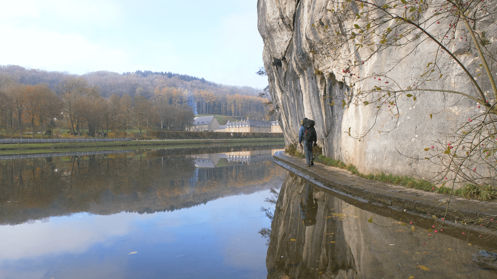